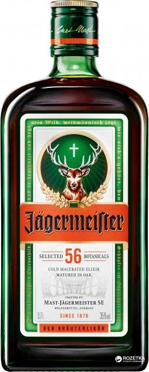

Лікерна настоянка на травах Becherovka 0.7 л
Вид: Лікер

Виробник: Jan Becher
Термін придатності: 2 роки
Постачальник: Чехія
Ціна: 379 грн
Вид: Лікер
Виробник: Jan Becher
Термін придатності: 2 роки
Постачальник: Чехія
Ціна: 379 грн
Вид: Лікер
Виробник: Mast-Jägermeister AG
Термін придатності: 2 роки
Постачальник: Німеччина
Ціна: 635 грн
Вид: Cвітле
Виробник: Львівська пивоварня
Термін придатності: Скло/банка - 6 місяців.
Постачальник: Carlsberg Group
Ціна: 24.99 грн
Вид: Світле
Виробник: Paderborner
Термін придатності: 1.5 місяця
Постачальник: Німеччина
Ціна: 35 грн
Вид: Ігристе
Виробник: Latinium
Термін придатності: 1.5 роки
Постачальник: Німеччина
Ціна: 159 грн

Вид: Ігристе
Виробник: San Mare
Термін придатності: 1.5 роки
Постачальник: Італія
Ціна: 229 грн